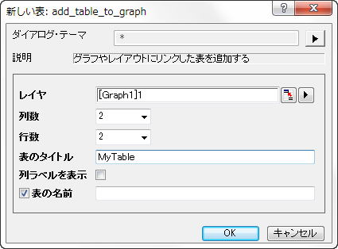
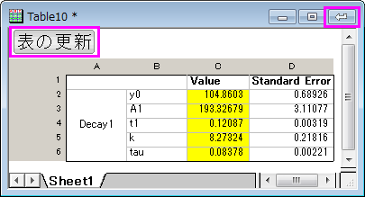

表の作成
表の作成
表をグラフウィンドウとレイアウトウィンドウに追加して、編集することができます。
表をグラフウィンドウ/レイアウトウィンドウに作成
グラフウィンドウ、あるいは、レイアウトウィンドウに表を追加します。
- グラフ操作ツールバーの新規リンク表ボタン をクリックします。
または、
- グラフウィンドウのレイヤ内を右クリック(レイヤウィンドウの空白箇所を右クリック)して、コンテキストメニューから新しい表...を選択します。
- add_table_to_graphダイアログで、表の列数と行数、表のタイトルなどを指定します。OKボタンをクリックして、ウィンドウに新規表を追加します。
- 
詳細は、add_table_to_graph Xファンクションをご覧ください。
表の編集
追加した表は、隠れた表ウィンドウにリンクしています。隠れた表ウィンドウを出すには：
- グラフ内で表をダブルクリックします。
- 
表nウィンドウ開いて：
- セルの値を編集、または、追加します。
- 表セルの統合
- 背景色を追加、フォントの変更などを行います。
- 列幅を調整します。
編集を完了したら、表の更新ボタンをクリックして、変更をグラフ内の表に適用し、表ウィンドウの右上の閉じるボタンをクリックします。
表で右クリックして、コンテキストメニューから オブジェクトの表示属性...を選択することも可能です。オブジェクト表示制御ダイアログを開いて、表の位置、大きさ、オブジェクト名、オブジェクトの接続先を含む項目をカスタマイズすることができます。
表をワークシートからグラフにコピー
表(の一部)をワークシートからグラフへ直接コピーするには、
- 表としてグラフに加えたいワークシート(の一部)を選択して、右クリックしてから、コンテキストメニューからコピーを選択します。
- グラフウィンドウに移ります。空白箇所を右クリックして、コンテキストメニューから貼り付けを選択します。
表を追加した後、上述の通りダブルクリックをして、表の編集をすることができます。